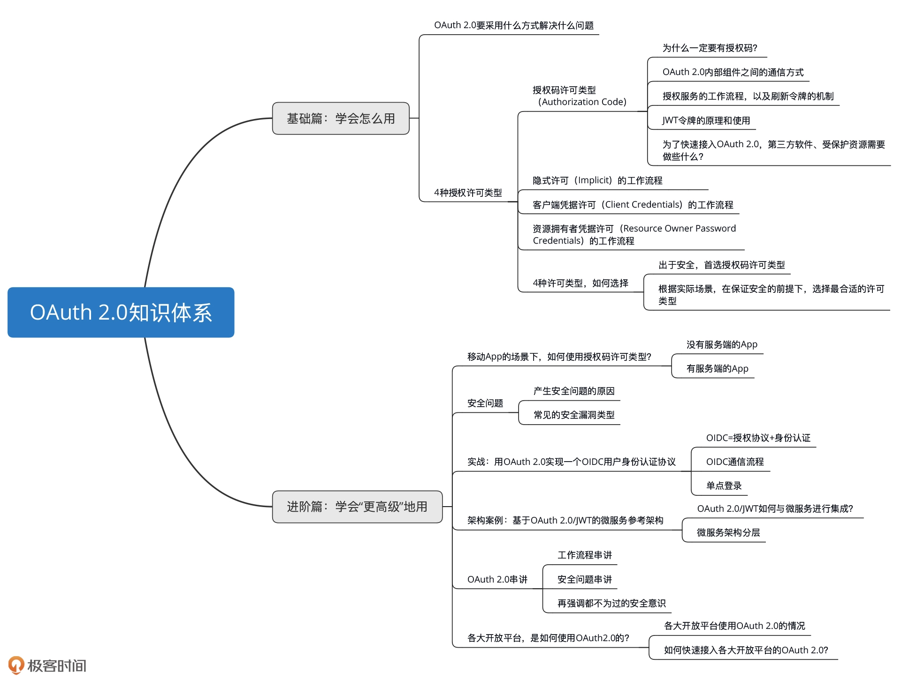

- 00 开篇词 为什么要学OAuth 2.0？.md
- 01 OAuth 2.0是要通过什么方式解决什么问题？.md
- 02 授权码许可类型中，为什么一定要有授权码？.md
- 03 授权服务：授权码和访问令牌的颁发流程是怎样的？.md
- 04 在OAuth 2.0中，如何使用JWT结构化令牌？.md
- 05 如何安全、快速地接入OAuth 2.0？.md
- 06 除了授权码许可类型，OAuth 2.0还支持什么授权流程？.md
- 07 如何在移动App中使用OAuth 2.0？.md
- 08 实践OAuth 2.0时，使用不当可能会导致哪些安全漏洞？.md
- 09 实战：利用OAuth 2.0实现一个OpenID Connect用户身份认证协议..md
- 10 串讲：OAuth 2.0的工作流程与安全问题.md
- 11 实战案例：使用Spring Security搭建一套基于JWT的OAuth 2.0架构.md
- 12 架构案例：基于OAuth 2.0_JWT的微服务参考架构.md
- 13 各大开放平台是如何使用OAuth 2.0的？.md
- 14 查漏补缺：OAuth 2.0 常见问题答疑.md
- 结束语 把学习当成一种习惯.md
00 开篇词 为什么要学OAuth 2.0？
开篇词 为什么要学OAuth 2.0？你好，我是王新栋，是京东的资深架构师，主要负责京东商家开放平台的架构工作。在接下来的时间里，我将带你一起学习 OAuth 2.0 这个授权协议。
我从 2014 年加入京东，便开始接触开放平台相关的技术，主要包括网关、授权两块的内容。在刚开始的几年时间里面，我一直都认为网关是开放平台的核心，起到 “中流砥柱” 的作用，毕竟网关要承载整个开放平台的调用量，同时还要有足够的系统容错能力。
但随着对开放平台理解的不断深入，我们要想在开放平台支持更多样的业务场景，我才发现网关和授权同样重要，相当于开放平台的 “两条腿”。
而对于授权 “这条腿”，它不仅要像网关一样要承载访问量，还要同时兼顾业务场景的发展。什么样的业务场景呢？类似的微信登录就是其中之一，越来越多的第三方应用都在向用户提供使用微信登录的解决方案，来减少用户注册的繁琐操作。而这个解决方案的背后原理，也是我们这门课要讲到的 OAuth 2.0 技术。
OAuth 2.0 是什么？
那，OAuth 2.0 到底是什么呢？我们先从字面上来分析下。OAuth 2.0 一词中的 “Auth” 表示 “授权”，字母 “O” 是 Open 的简称，表示 “开放” ，连在一起就表示 “开放授权”。这也是为什么我们使用 OAuth 的场景，通常发生在开放平台的环境下。
看到这里，你可能会说应该还有 OAuth 1.0 吧。没错，OAuth 2.0 之前就是 OAuth 1.0。现在，我就来和你说说这两个版本的 OAuth 有什么区别吧。
在 OAuth 1.0 的时候，它有个 “很大的愿望” 就是想用一套授权机制来应对现实中的所有场景，比如 Web 应用场景、移动 App 应用场景、官方应用场景等等，但是这些场景并不是完全相同的。比如官方应用场景，你说还需要让用户来授权吗？如果需要，始终使用一套授权机制给用户带来的体验，是好还是坏呢？
到了 OAuth 2.0 的时候，就解决了 OAuth 1.0 面临的这种“尴尬”。OAuth 2.0 不再局限于一种授权机制，它扩充了授权许可机制类型，有了授权码许可机制、客户端凭据机制、资源拥有者凭据机制和隐式许可机制。这样的 OAuth 机制就能够很灵活地适应现实中的各种场景，比如移动应用的场景、官方应用的场景，等等。
此外，OAuth 1.0 的弊端还包括安全上的固化攻击等问题，因此 OAuth 1.0 现在已经是废弃状态了。对于我们来讲，直接使用 OAuth 2.0 就可以了。
为什么会有这门课？
但其实呢，OAuth 2.0 并不是一门新的技术，从 2007 年 OAuth 1.0 面世，到 2011 年发布 OAuth 2.0 草案，互联网上已经有很多关于 OAuth 的资料了。所以，在我初次接触 OAuth 2.0 去查阅这些零散的资料时，觉得 OAuth 2.0 很简单啊，不就是授权吗，看两篇文章就够了啊。
但是，看似简单的 OAuth 2.0 却又让我望而却步，在如何使用授权码流程上踌躇不前。比如，在 Web 应用中到底应该怎么使用授权码流程，移动 App 中还能使用授权码流程吗？当我带着这些问题尝试到网上搜索资料时，那些不成体系的资料着实也让我走了不少弯路。不知道你是不是也被下面问题困扰着：
我要开发一个 Web 应用，当使用 OAuth 2.0 的时候，担心授权码被拦截，却因为没有较好的解决方法而一筹莫展。
我要开发一款移动 App，当使用 OAuth 2.0 的时候，在确定是否需要 Server 端上，花费了大把的时间。
后来我看到《OAuth 2 in Action》这本书，如获至宝。它非常系统地讲解了 OAuth2.0，让我对这个协议框架有了更全面、深刻的认识。也正是这本书给了我足够的勇气，让我能够把自己这些年在开放平台的工作中，所掌握的 OAuth 知识体系梳理一遍。也是在这一刻，我才意识到只要有了方向，就有了厚度。
当我开始试着整理出自己这些年掌握的 OAuth 2.0 相关技术、实践，并计划输出的时候，我真真切切地发现，OAuth 2.0 是讲授权没错，但要用对、用好这个协议，绝不是短短两篇文章就能讲清楚的。这也是我做这门课的初衷。
这门课是怎么设计的？
在这门课程里，我会分为基础篇和进阶篇两大模块，每个模块都会安排一些实践内容，和你讲清楚 OAuth 2.0。接下来，我就和你解释下为什么要这么安排。
**第一部分是基础篇，就是你必须要掌握的 OAuth 2.0 的基础知识。**在这一模块中，我会和你细致地讲解授权码许可（Authorization Code）类型的流程，包括 OAuth 2.0 内部组件之间的通信方式，以及授权服务、客户端（第三方软件）、受保护资源服务这三个组件的原理。
在此基础上，我还会为你讲解其他三种常见许可类型，分别是资源拥有者凭据许可（Resource Owner Password Credentials）、隐式许可（Implicit）、客户端凭据许可（Client Credentials）的原理，以及如何选择适合自己实际场景的授权类型。这样一来，你就能掌握整个 OAuth 2.0 中所有许可类型的运转机制了，并且能够从容地在实际工作环境中使用它们。
为了能够把你带入到 OAuth 2.0 的场景中，方便你理解这些概念、流程，我在讲述这些基础内容的时候，会用一个小明使用第三方“小兔打单软件”来打印自己在京东店铺的订单数据的例子，来贯穿始终。
我可以告诉你的是，学完基础篇的内容，你就可以把 OAuth 2.0 用到实际的工作场景了。
第二部分进阶篇的内容，我会侧重讲一些 OAuth 2.0 “更高级” 的用法，可以让你知道如何更安全地用、扩展地用 OAuth 2.0。
所以，这部分内容会包括如何在移动 App 中使用 OAuth 2.0，因使用不当而导致的 OAuth 2.0 安全漏洞有哪些，以及如何利用 OAuth 2.0 实现一个 OpenID Connect 用户身份认证协议。此外，我还邀请了微服务技术领域的专家杨波老师，给我们分享了一个架构案例，基于 OAuth 2.0/JWT 的微服务参考架构。
最后，为了配合课程的学习，不让理论过于枯燥，也为了学以致用，我在GitHub上为你准备了一份非常简单、可落地的通过 Java 语言来实现的代码。
简单的地方在于，代码中除了基本的 Servlet 技术外，我没有引入任何其它的第三方内容。所以，你只要能够理解 Request 和 Response，就能够理解这份代码。
可落地的地方在于，虽然它是一份简单的代码，但它不仅把整个 OAuth 2.0 的组件都跑通了，还包含了实践一个 OIDC 协议的具体实现。当然，我在代码里面还预留了一些 TODO 的地方，你可以结合上下文来自行实践处理。这是一项开源的工程。
在这里，我总结了 OAuth 2.0 的知识体系图，你也可以先了解下整个课程的知识结构。

这样一来，你学完这门课后，便能在互联网的授权领域练就一双“火眼金睛”，可以发现所有使用过 OAuth 2.0 的痕迹，诸如微信登录的场景。这样，即使你不用抓包分析，也能够洞悉它背后的原理，为今后快速熟知互联网的类似场景打下基础。
最后，我还想正式认识一下你。你可以在留言区里做个自我介绍，和我聊聊，你目前学习、使用 OAuth 2.0 的难点、痛点是什么？或者，你也可以聊聊你对 OAuth 2.0、对授权还有哪些独特的思考和体验，欢迎在留言区和我交流讨论。
好了，现在就开启我们的 OAuth 2.0 之旅吧。
© 2019 - 2023 Liangliang Lee. Powered by Vert.x and hexo-theme-book.